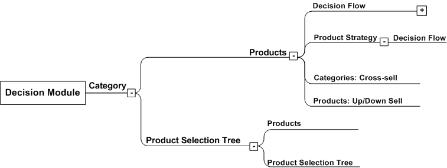
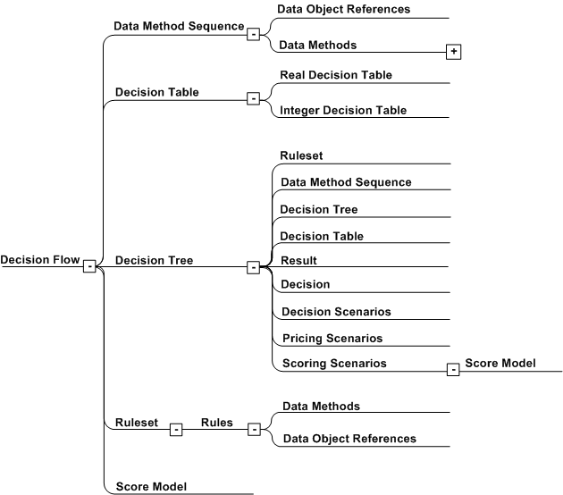

Common Component Hierarchy
Products and decision strategies are based on a common component hierarchy.
The following hierarchy defines the common components of a product or a decision strategy:
- There must be at least one product category.
- Each category must include at least one product.

An example of how to configure products and categories
- Each product must have either a product strategy that references at least one decision flow, or it must have a default decision flow assigned to it.
- Each decision flow is a graphical representation that visually describes a decisioning process. It consists of one or more decision flow steps with decision flow step transitions.

An example of a decision flow (without mapping)
- Each decision flow step includes an implementation type that can be a ruleset, decision tree, decision table, data method sequence, or score model.
- Each ruleset consists of a number of rules.
- Each decision tree consists of a connected set of conditions and actions. It can contain a scoring scenario, pricing scenario, or decision scenario action node, or a ruleset, decision table, data method sequence, decision, or decision tree action node.
- Each decision table consists of condition rows and columns containing input values, and result cells containing the values that are generated when the decision table is executed.
- Each data method sequence consists of one or more data methods executed as an ordered list.
- Each score model consists of a collection of inputs, called characteristics. Each characteristic consists of a set of bins with associated partial score values. Score models are called from a scoring scenario in a decision tree or directly from a decision flow step.
Product strategy components can be used in multiple products and categories, and can be versioned. When you create products and their components, use the following order:
- Create the data methods and the supporting data object references that other components will use to create and access data.
- Create any scenarios that will be accessed through other decision flow step components.
- Create decision flow step implementations such as rulesets, tables, trees, data method sequences, and score models, and place them in the desired execution order.
- Optionally, create a product strategy and assign the decision flow you created to it.
- Finally, create a product within a product category and specify a product strategy or a default decision flow, or both.